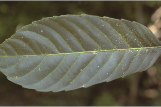
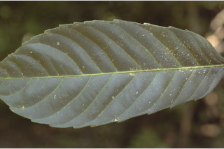
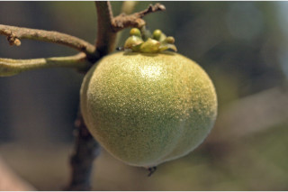
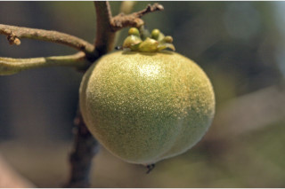

Trees up to 30 m tall.
30 ಮೀ. ಎತ್ತರದವರೆಗೆ ಬೆಳೆಯುವ ಮರಗಳು.
30 മീറ്റര് വരെ ഉയരമുളള മരങ്ങള്.
மரங்கள், 30 மீ. உயரம் வரை வளரக்கூடியது
Bark brown, smooth; blaze orange.
ತೊಗಟೆ ಕಂದು ಬಣ್ಣದಲ್ಲಿದ್ದು ನಯವಾಗಿರುತ್ತದೆ;ಕಚ್ಚು ಮಾಡಿದ ಜಾಗ ಕಿತ್ತಳೆ ಬಣ್ಣದಲ್ಲಿರುತ್ತದೆ.
മിനുസമായ, തവിട്ട് നിറത്തിലുളള പുറംതൊലി; വെട്ടുപാടിന് ഓറഞ്ച് നിറം.
மரத்தின் பட்டை ப்ரவுன் நிறம், வழுவழுப்பானது; உள்பட்டை ஆரஞ்சு நிறமானது.
Branchlets stout, terete with lenticels.
ಕಿರುಕೊಂಬೆಗಳು ದೃಢ ಹಾಗೂ ದುಂಡಾಗಿದ್ದು ವಾಯುವಿನಿಮಯ ಬೆಂಡು ರಂಧ್ರಗಳ ಸಮೇತವಿರುತ್ತವೆ.
ശ്വസനരന്ധ്രങ്ങളുളള, ദൃഢമായ, ഉരുണ്ട ഉപശാഖകള്.
சிறிய நுனிக்கிளைகள் தடித்தவை, குறுக்குவெட்டுத் தோற்றத்தில் வளையமானது, லெண்டிசெல் உடையது.
Exudates red sap from the cut end of branchlets.
ಕಿರುಕೊಂಬೆಗಳ ಕತ್ತರಿಸಿದ ತುದಿಯಲ್ಲಿ ಕೆಂಪಾದ ಜಿನುಗು ದ್ರವವಿರುತ್ತದೆ.
ഉപശാഖകളുടെ മുറിഞ്ഞ ഭാഗത്തുനിന്നും ചുവന്ന സ്രവം വരുന്നു.
கிளைகள் வெட்டப்படும் போது சிவப்பு நிறமான திரவத்தை சுரக்கிறது.
Leaves simple, alternate, spiral, usually at the end of the twigs; petiole 4-10 cm long, terete, glabrous, swollen at both ends, pair of glands present at the junction of lamina above; lamina 15-32 x 4-11 cm, usually narrow elliptic to oblanceolate, apex acuminate, base cuneate, margin serrate, coriaceous, glabrous, drying brown; midrib raised above; secondary_nerves 10-12 pairs; tertiary_nerves slender, obliquely_percurrent.
ಎಲೆಗಳು ಸರಳವಾಗಿದ್ದು ಪರ್ಯಾಯ ಮತ್ತು ಸುತ್ತು ಜೋಡನಾ ವ್ಯವಸ್ಥೆಯಲ್ಲಿದ್ದು ಸಾಮಾನ್ಯವಾಗಿ ಕುಡಿಕೊಂಬೆಗಳ ತುದಿಯಲ್ಲಿರುತ್ತವೆ. ತೊಟ್ಟುಗಳು 4 ರಿಂದ 10 ಸೆಂ.ಮೀ.ಉದ್ದವಿದ್ದು ದುಂಡಾಗಿರುತ್ತವೆ ಮತ್ತು ರೋಮರಹಿತವಾಗಿರುತ್ತವೆ ಹಾಗೂ ಎರಡೂ ತುದಿಯಲ್ಲಿ ಊದಿಕೊಂಡಿರುತ್ತವೆ; ಪತ್ರದ ಮೇಲ್ಭಾಗದಲ್ಲಿ ತೊಟ್ಟು ಮತ್ತು ಪತ್ರ ಸಂಧಿಸುವಲ್ಲಿ ಒಂದು ಜೋಡಿ ರಸಗ್ರಂಥಿಗಳಿರುತ್ತವೆ;ಪತ್ರಗಳು 15-32 X 4-11 ಸೆಂ.ಮೀ. ಗಾತ್ರದಲ್ಲಿದ್ದು,ಸಾಮಾನ್ಯವಾಗಿ ಸಂಕುಚಿತ ಅಂಡವೃತ್ತದಿಂದ ಬುಗುರಿ-ಭರ್ಜಿಯ ಆಕಾರ ಹೊಂದಿರುತ್ತವೆ; ಪತ್ರಗಳು ಕ್ರಮೇಣ ಚೂಪಾಗುವ ತುದಿ ಹೊಂದಿರುತ್ತವೆ ,ಬುಡ ಬೆಣೆಯಾಕಾರದ ಮಾದರಿಯಲ್ಲಿರುತ್ತದೆ; ಎಲೆಯ ಗರಗಸ ದಂತಿತವಾಗಿರುತ್ತದೆ; ಮೇಲ್ಮೈ ತೊಗಲನ್ನೋಲುವ ಮಾದರಿಯದಾಗಿದ್ದು ರೋಮರಹಿತವಾಗಿರುತ್ತದೆ ಹಾಗೂ ಒಣಗಿದಾಗ ಕಂದು ಬಣ್ಣ ಹೊಂದಿರುತ್ತದೆ;ಪತ್ರದ ಮೇಲ್ಭಾಗದಲ್ಲಿ ಮಧ್ಯ ನಾಳ ಮೇಲೆದ್ದಿರುತ್ತದೆ; ಎರಡನೇ ದರ್ಜೆಯ ನಾಳಗಳು 12 ಜೋಡಿಗಳಿರುತ್ತವೆ;ಮೂರನೇ ದರ್ಜೆಯ ನಾಳಗಳು ಓರೆಯಾಗಿದ್ದು ಎಲೆ ದಿಂಡಿಗೆ ಅಡ್ಡವಾಗಿ ಕೂಡುವಂತವು.
ലഘുവായ ഇലകള്, ഏകാന്തരക്രമത്തില്, സര്പ്പിളമായി, സാധാരണയായി തണ്ടുകളുടെ അറ്റത്ത് അടുക്കിയ വിധത്തിലാണ്; രണ്ടറ്റവും വീര്ത്ത, ഉരുണ്ട, അരോമില ഇലഞെട്ടിന് 4 സെ.മീ മുതല് 10 സെ.മീ വരെ നീളം, പത്രഫലകവുമായി ചേരുന്ന സന്ധിയില് ഒരുജോഡി ഗ്രന്ഥികളുണ്ട്; പത്രഫലകത്തിന് 15 സെ.മീ മുതല് 32 സെ.മീ വരെ നീളവും 4 സെ.മീ മുതല് 11 സെ.മീ വരെ വീതിയും, ആകൃതി സാധാരണയായി വീതികുറഞ്ഞ ദീര്ഘവൃത്തംതൊട്ട് അപകുന്താകാരം വരെയാകാം. പത്രാഗ്രം ദീര്ഘമാണ്, പത്രാധാരം ആപ്പാകാരത്തിലാണ്, അരികുകള് ഒന്തുരമാണ്, ചര്മ്മില പ്രകൃതം, അരോമിലം, ഉണങ്ങുമ്പോള് തവിട്ട് നിറംമാകുന്നു; മുഖ്യസിര മുകളില് ഉയര്ന്നതാണ്; 10 മുതല് 12 വരെ ജോഡി ദ്വിതീയ ഞരമ്പുകള്; ചരിഞ്ഞ പെര്കറന്റ് വിധത്തിലാണ്.
இலைகள் தனித்தவை, மாற்றுடுக்கமானவை, சுழல் போல் அமைந்தவை, பொதுவாக தண்டின் நுனியில் கூட்டமாக அமைந்தவை; இலைக்காம்பு 4-10 செ.மீ. நீளமானது; குறுக்குவெட்டுத் தோற்றத்தில் வளையமானது, உரோமங்களற்றது, காம்பின் இருமுனைகளும் உப்பியவை, ஒர் ஜோடி சுரப்பிகள் காம்பு அலகுடன் இணையுமிடத்தில் மேற்புறத்திலுடையவை; இலை அலகு 15-32 X 4-11 செ.மீ., பொதுவாக குறுகிய நீள்வட்டம் முதல் தலைகீழ் ஈட்டி வடிவானது, அலகின் நுனி அதிக்கூரியது, அலகின் தளம் ஆப்பு வடிவானது, அலகின் விளிம்பு ரம்ப பற்களுடையது, கோரியேசியஸ், உரோமங்களற்றது, உலரும் போது ப்ரவுன் நிறமடைகிறது; மையநரம்பு மேற்பரப்பில் அலகின் பரப்பைவிட உயர்ந்தது; இரண்டாம் நிலை நரம்புகள் 8-12 ஜோடிகள்; மூன்றாம் நிலை நரம்புகள் மெல்லியவை சாய்ந்த பெர்க்கரண்ட்.
Flowers unisexual, dioecious, in terminal or lateral panicled pendulous racemes.
ಹೂಗಳು ಏಕಲಿಂಗಿಗಳಾಗಿದ್ದು ಗಂಡು ಮತ್ತು ಹೆಣ್ಣು ಹೂಗಳು ಪ್ರತ್ಯೇಕ ಸಸ್ಯಗಳಲ್ಲಿದ್ದು ತುದಿಯಲ್ಲಿನ ಅಥವಾ ಅಕ್ಷಾಕಂಕುಳಿನಲ್ಲಿ ಜೋತಾಡುವ ಮಾದರಿಯ ಮಧ್ಯಾಭಿಸರ ಪುಷ್ಪಮಂಜರಿಯಲ್ಲಿರುತ್ತದೆ.
ഏകലിംഗികളായ പൂക്കള്, ഉച്ഛസ്ഥമോ പാര്ശ്വസ്ഥമോ ആയ തൂങ്ങിനില്ക്കുന്ന പാനിക്കിള് റസീം പൂങ്കുലകളിലുണ്ടാകുന്നു, ഡയീഷ്യസാണ്.
மலர்கள் ஓர்பாலானவை, ஈரகம் கொண்டவை, தண்டின் நுனியில் அல்லது பக்கவாட்டிலமைந்த தொங்கிய பேனிக்கிள்டு ரெசீம் வகை மஞ்சரி.
Capsule, globose, 3-ribbed, brown tomentose.
ಸಂಪುಟ ಫಲಗಳು ಗೋಳಾಕಾರದಲ್ಲಿದ್ದು, 3 ಉಬ್ಬುಗಳ ಸಮೇತವಿರುತ್ತವೆ ಹಾಗೂ ಕಂದು ಬಣ್ಣದ ದಟ್ಟ ಮೃದು ತುಪ್ಪಳವನ್ನು ಹೊಂದಿರುತ್ತವೆ.
കായ, 3 വരമ്പുകളുളള, തവിട്ട് രോമിലമായ, ഗോളാകാര കാപ്സ്യൂള് ആണ്.
வெடிகனி, (கேப்சூல்), கோளவடிவானது, 3-பிளவுகளுடையது, ப்ரவுன் நிறமான உரோமங்களுடையது.


 



 
